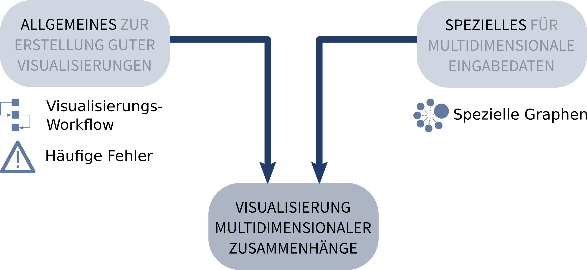
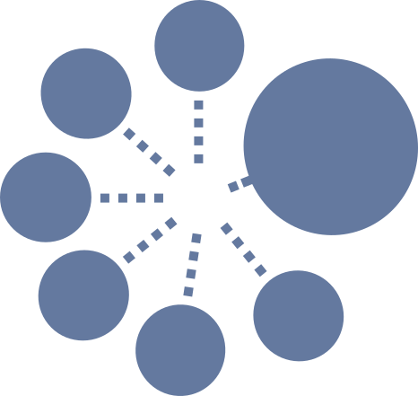
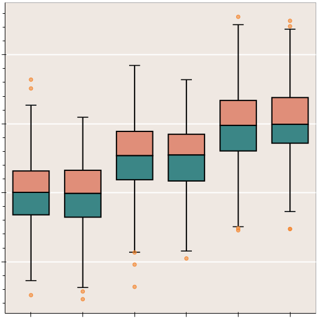
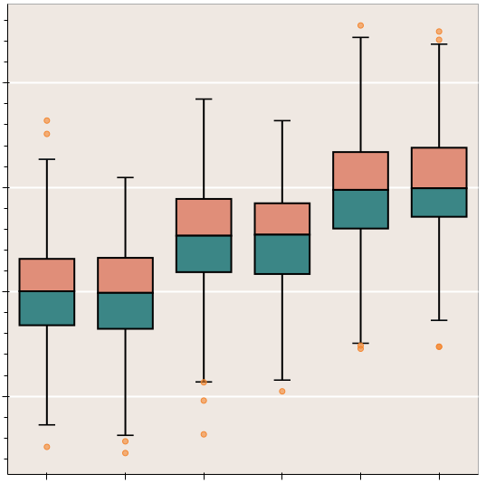
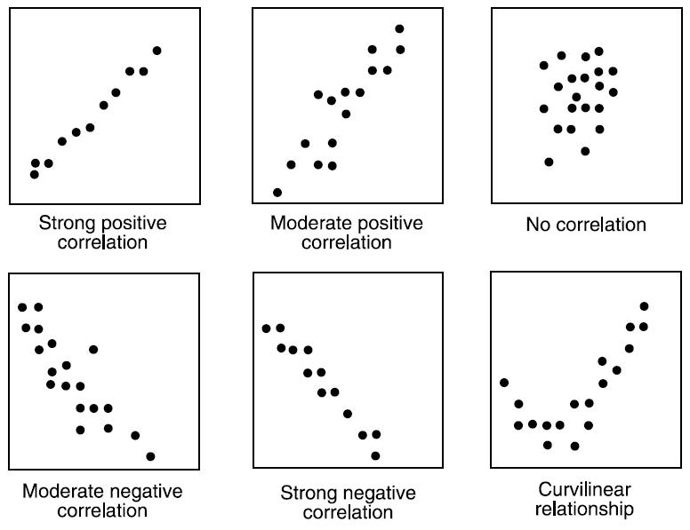
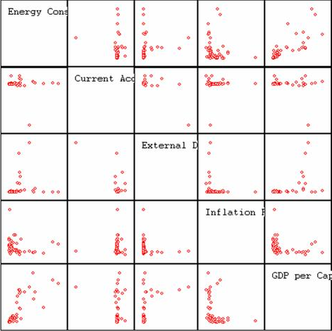

Visualisierung
multidimensionaler
Zusammenhänge
Richard Polzin
richard.polzin@rwth-aachen.de
Roadmap
Häufige Fehler Vermeiden
Mit diversen simplen Regeln lassen sich grobe Fehler bei der Visualisierung vermeiden.
Probleme erkennen und beheben
Verfehlt die Visualisierung ihre Wirkung ist es oft umständlich die Ursache zu finden. Es wird ein Modell präsentiert um dies zu vereinfachen.
Spezielle Graphen
Um mit multidimensionalen Daten zu agieren benötigt man spezielle Darstellungsformen.

| Wie häufige Probleme vermieden werden können | |
| Wie man Ursachen von Problemen findet | |
| Graphen für multidimensionalen Daten |
Häufige Fehler Vermeiden
Irreführende Skalierung

Verzerrung durch Effekte


Chartjunk

Data-Ink Ratio
Data-Ink Ratio


Kreisdiagramme


Probleme erkennen und beheben
Visualisierungspipeline

Spezielle Graphen

1- und 2-Dimensional


 

3-Dimensional


n-Dimensional
n-Dimensional
n-Dimensional

n-Dimensional

n-Dimensional

n-Dimensional